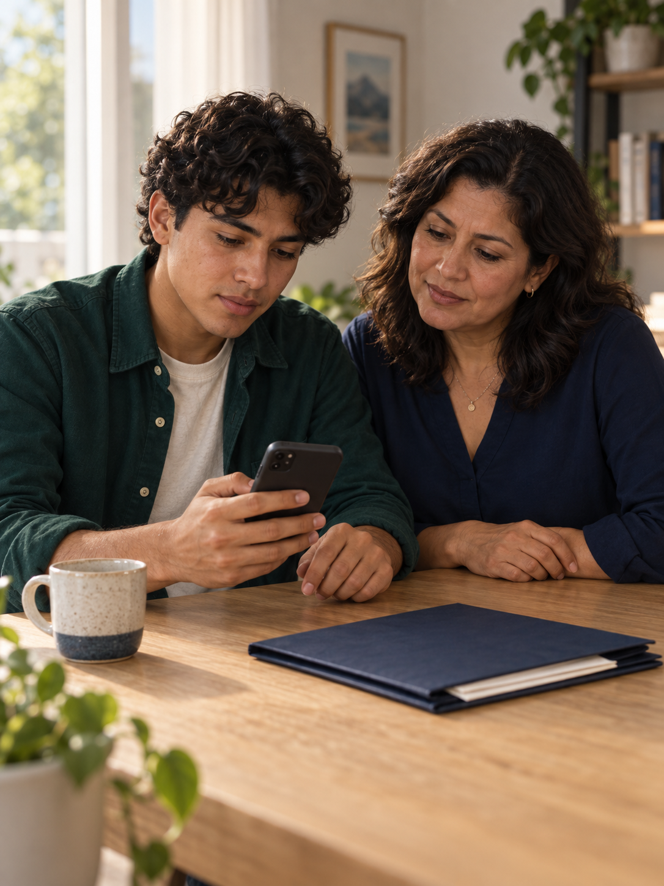
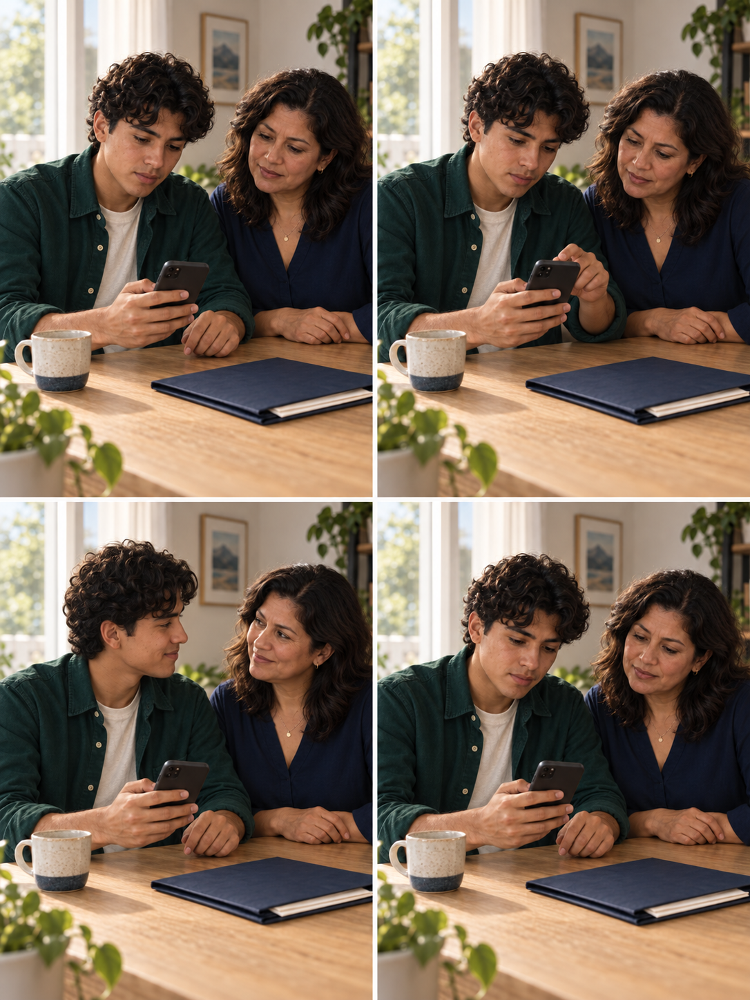

01 / 07Hero humano
Una nueva etapa, acompañados
Un joven y su tutora revisan juntos sus próximos pasos desde el celular.
10 segundos3:4 · vertical4 momentos
La imagen individual es la toma inicial. La hoja guía el movimiento; añade la toma como Primer fotograma si Grok permite ambos roles.


Ver los 4 momentos del storyboard

Lectura: arriba izquierda → arriba derecha → abajo izquierda → abajo derecha.
Prompt completo para Grok
Desde 0:00 se ve a pantalla completa al mismo joven adulto de cabello rizado y camisa verde esmeralda sentado a la izquierda, junto a la misma mujer adulta de blusa azul marino a la derecha, en una mesa de madera clara. El joven sostiene un único celular grafito en su mano derecha, como en la imagen inicial. Ambos miran el teléfono. La toma comienza directamente dentro de esta escena y continúa sin cortes durante diez segundos. Fotografía cinematográfica humana y orgánica. Mantén los rostros, edades aparentes, piel natural, cabello, ropa y proporciones de los dos personajes. Luz cálida de ventana desde la izquierda; casa luminosa, carpeta navy cerrada con hojas parcialmente guardadas, taza cerámica y plantas. El teléfono siempre es el mismo, la carpeta y la taza permanecen en su sitio. La pantalla queda oblicua y sin contenido legible. La hoja adjunta guía cuatro momentos consecutivos del mismo plano. Cada momento ocupa toda la pantalla; la cuadrícula nunca se muestra. Cámara fija, encuadre retrato 3:4, profundidad de campo moderada. Respiración y parpadeos naturales muy discretos, sin pose publicitaria. 0:00–0:02 — ARRANQUE. Viñeta superior izquierda. Ambos observan el teléfono en silencio. El joven mantiene su mano izquierda relajada sobre la mesa. La mujer mantiene sus manos juntas sobre la mesa. 0:02–0:04 — CONSULTAR. Viñeta superior derecha. El joven levanta lentamente su mano izquierda, toca una vez la pantalla con el índice y realiza un único deslizamiento corto. El teléfono sigue sujeto en la mano derecha sin cambiar de tamaño ni orientación de forma brusca. La mujer se acerca apenas para seguir lo que ve. 0:04–0:07 — ACOMPAÑAMIENTO. Viñeta inferior izquierda. El joven devuelve la mano izquierda a su posición de descanso sobre la mesa. Ambos se miran brevemente y comparten una sonrisa pequeña y tranquila. Es una expresión de compañía al revisar sus próximos pasos; no celebrar una aprobación ni representar un resultado de un trámite. No hablar ni mirar a cámara. 0:07–0:10 — REGRESO. Viñeta inferior derecha. Ambos vuelven a mirar el teléfono. La mujer recupera su postura inicial; el joven mantiene el teléfono en la altura de apertura y su otra mano descansando sobre la mesa. Durante el último segundo, recuperar suavemente la composición y el gesto del inicio, conservando respiración viva y natural. Preparar una repetición calmada sin fundido ni cierre añadido. Sonido: sin narración, sin conversación, sin música. Ambiente doméstico casi imperceptible si se genera sonido; la pieza debe entenderse completamente en silencio. No dividir pantalla, no mostrar la hoja, no hacer zoom desde un collage. No añadir personas, manos, teléfonos, documentos nuevos, texto, logos, interfaces flotantes, partículas, luces de neón, sellos, banderas ni resultados legales. No metamorfosis ni cámara rápida. Mantener contacto de dedos y celular, gestos pequeños y transiciones corporales continuas. El final enlaza con el inicio sin negro ni congelado de cierre.